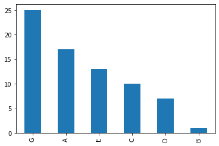
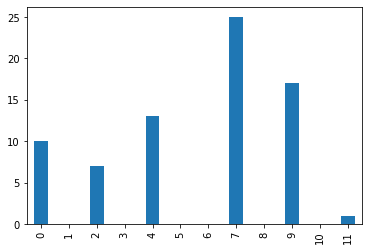

The Essen Folksong Collection¶
[1]:
import pandas as pd
[2]:
df = pd.read_csv("Essen_folksong_collection.csv", sep="\t", index_col=0)
df.head(10)
[2]:
| region | title | key | DGIs | spelled_pitches | |
|---|---|---|---|---|---|
| 0 | africa | Muwaschah Lamma Bada | g minor | ['P4', 'M2', 'm2', 'M2', 'M-2', 'P1', 'm-2', '... | ['D5', 'G5', 'A5', 'B-5', 'C6', 'B-5', 'B-5', ... |
| 1 | mexico | CUCA 1 | F major | ['P1', 'P1', 'P4', 'M3', 'M-6', 'P1', 'P1', 'P... | ['C4', 'C4', 'C4', 'F4', 'A4', 'C4', 'C4', 'C4... |
| 2 | mexico | CUCA 2 | F major | ['P1', 'P1', 'P4', 'M3', 'M-6', 'P1', 'P1', 'P... | ['C4', 'C4', 'C4', 'F4', 'A4', 'C4', 'C4', 'C4... |
| 3 | mexico | CUCA 1 | F major | ['P1', 'P1', 'P4', 'M3', 'M-6', 'P1', 'P1', 'P... | ['C4', 'C4', 'C4', 'F4', 'A4', 'C4', 'C4', 'C4... |
| 4 | mexico | CUCA 2 | F major | ['P1', 'P1', 'P4', 'M3', 'M-6', 'P1', 'P1', 'P... | ['C4', 'C4', 'C4', 'F4', 'A4', 'C4', 'C4', 'C4... |
| 5 | misc | Die dienende Schwester Es wohnt ein Markgraf n... | F major | ['P4', 'P-4', 'P1', 'P1', 'm-3', 'P4', 'P1', '... | ['C4', 'F4', 'C4', 'C4', 'C4', 'A3', 'D4', 'D4... |
| 6 | misc | Winterrosen Es kam ein Fraeulein mit ein'm Krueg | F major | ['P-4', 'P4', 'P1', 'P1', 'M2', 'M2', 'M-3', '... | ['F4', 'C4', 'F4', 'F4', 'F4', 'G4', 'A4', 'F4... |
| 7 | usa | Die Schlangenkoechin 'Oh, where have you been, | G major | ['P1', 'M6', 'P1', 'P1', 'M-2', 'M-2', 'P-4', ... | ['D4', 'D4', 'B4', 'B4', 'B4', 'A4', 'G4', 'D4... |
| 8 | usa | Die Schlangenkoechin 'Oh, where have you been,... | G major | ['M3', 'P1', 'P1', 'P1', 'M-2', 'M-2', 'P1', '... | ['G4', 'B4', 'B4', 'B4', 'B4', 'A4', 'G4', 'G4... |
| 9 | usa | Die Schlangenkoechin 'Oh, where have you been, | G major | ['M2', 'M2', 'P1', 'P1', 'P1', 'M-2', 'P1', 'M... | ['G4', 'A4', 'B4', 'B4', 'B4', 'B4', 'A4', 'A4... |
[5]:
df.region.value_counts()
[5]:
erk 1700
han 1223
polska 925
shanxi 802
boehme 704
ballad 687
zuccal 616
fink 566
altdeu2 316
altdeu1 309
kinder 213
natmin 206
jugoslav 115
allerkbd 110
dva 106
oesterrh 104
schweiz 93
elsass 91
nederlan 85
lothring 71
magyar 45
czech 43
rossiya 37
misc 37
romania 28
variant 26
tirol 14
france 14
ukraina 13
test 12
sverige 11
xinhua 10
danmark 9
italia 8
luxembrg 8
usa 7
mexico 4
england 4
africa 1
Name: region, dtype: int64
[198]:
df.info()
<class 'pandas.core.frame.DataFrame'>
Int64Index: 9373 entries, 0 to 9372
Data columns (total 5 columns):
# Column Non-Null Count Dtype
--- ------ -------------- -----
0 region 9373 non-null object
1 title 9373 non-null object
2 key 9372 non-null object
3 DGIs 9373 non-null object
4 spelled_pitches 9373 non-null object
dtypes: object(5)
memory usage: 439.4+ KB
[199]:
df[df["key"].isnull()]
[199]:
| region | title | key | DGIs | spelled_pitches | |
|---|---|---|---|---|---|
| 1028 | han | Yidui gezi xukongli fei | NaN | [] | [] |
[200]:
df = df.drop(1028).reset_index()
[201]:
df.key.value_counts()
[201]:
G major 2831
F major 1878
C major 1309
B- major 664
D major 648
A major 553
g minor 370
E- major 289
a minor 284
d minor 170
E major 150
e minor 109
A- major 56
f minor 19
c minor 17
b- minor 8
D- major 6
B major 4
d- minor 2
b minor 2
f# minor 2
e- minor 1
Name: key, dtype: int64
[202]:
df[["root_note", "mode"]] = df["key"].str.split(expand=True)
[203]:
df["root_note"] = df["root_note"].str.upper()
# df["root_note"] = df["root_note"].str.replace("-", "b")
[204]:
df["root_note"].value_counts()
[204]:
G 3201
F 1897
C 1326
A 837
D 818
B- 672
E- 290
E 259
A- 56
D- 8
B 6
F# 2
Name: root_note, dtype: int64
[205]:
df["mode"].value_counts()
[205]:
major 8388
minor 984
Name: mode, dtype: int64
[206]:
note_names = list("FCGDAEB")
print(note_names)
['F', 'C', 'G', 'D', 'A', 'E', 'B']
[219]:
accidentals = ["-", "", "#"]
tpcs = [ n + a for a in accidentals for n in note_names ]
print(tpcs)
['F-', 'C-', 'G-', 'D-', 'A-', 'E-', 'B-', 'F', 'C', 'G', 'D', 'A', 'E', 'B', 'F#', 'C#', 'G#', 'D#', 'A#', 'E#', 'B#']
[220]:
len(tpcs)
[220]:
21
[221]:
import numpy as np
r = np.arange(len(tpcs)) - 8
d = dict(zip(tpcs, r))
d
[221]:
{'F-': -8,
'C-': -7,
'G-': -6,
'D-': -5,
'A-': -4,
'E-': -3,
'B-': -2,
'F': -1,
'C': 0,
'G': 1,
'D': 2,
'A': 3,
'E': 4,
'B': 5,
'F#': 6,
'C#': 7,
'G#': 8,
'D#': 9,
'A#': 10,
'E#': 11,
'B#': 12}
[222]:
df["root_tpc"] = df["root_note"].map(d)
[223]:
df.head(10)
[223]:
| index | region | title | key | DGIs | spelled_pitches | root_note | mode | root_tpc | |
|---|---|---|---|---|---|---|---|---|---|
| 0 | 0 | africa | Muwaschah Lamma Bada | g minor | ['P4', 'M2', 'm2', 'M2', 'M-2', 'P1', 'm-2', '... | ['D5', 'G5', 'A5', 'B-5', 'C6', 'B-5', 'B-5', ... | G | minor | 1 |
| 1 | 1 | mexico | CUCA 1 | F major | ['P1', 'P1', 'P4', 'M3', 'M-6', 'P1', 'P1', 'P... | ['C4', 'C4', 'C4', 'F4', 'A4', 'C4', 'C4', 'C4... | F | major | -1 |
| 2 | 2 | mexico | CUCA 2 | F major | ['P1', 'P1', 'P4', 'M3', 'M-6', 'P1', 'P1', 'P... | ['C4', 'C4', 'C4', 'F4', 'A4', 'C4', 'C4', 'C4... | F | major | -1 |
| 3 | 3 | mexico | CUCA 1 | F major | ['P1', 'P1', 'P4', 'M3', 'M-6', 'P1', 'P1', 'P... | ['C4', 'C4', 'C4', 'F4', 'A4', 'C4', 'C4', 'C4... | F | major | -1 |
| 4 | 4 | mexico | CUCA 2 | F major | ['P1', 'P1', 'P4', 'M3', 'M-6', 'P1', 'P1', 'P... | ['C4', 'C4', 'C4', 'F4', 'A4', 'C4', 'C4', 'C4... | F | major | -1 |
| 5 | 5 | misc | Die dienende Schwester Es wohnt ein Markgraf n... | F major | ['P4', 'P-4', 'P1', 'P1', 'm-3', 'P4', 'P1', '... | ['C4', 'F4', 'C4', 'C4', 'C4', 'A3', 'D4', 'D4... | F | major | -1 |
| 6 | 6 | misc | Winterrosen Es kam ein Fraeulein mit ein'm Krueg | F major | ['P-4', 'P4', 'P1', 'P1', 'M2', 'M2', 'M-3', '... | ['F4', 'C4', 'F4', 'F4', 'F4', 'G4', 'A4', 'F4... | F | major | -1 |
| 7 | 7 | usa | Die Schlangenkoechin 'Oh, where have you been, | G major | ['P1', 'M6', 'P1', 'P1', 'M-2', 'M-2', 'P-4', ... | ['D4', 'D4', 'B4', 'B4', 'B4', 'A4', 'G4', 'D4... | G | major | 1 |
| 8 | 8 | usa | Die Schlangenkoechin 'Oh, where have you been,... | G major | ['M3', 'P1', 'P1', 'P1', 'M-2', 'M-2', 'P1', '... | ['G4', 'B4', 'B4', 'B4', 'B4', 'A4', 'G4', 'G4... | G | major | 1 |
| 9 | 9 | usa | Die Schlangenkoechin 'Oh, where have you been, | G major | ['M2', 'M2', 'P1', 'P1', 'P1', 'M-2', 'P1', 'M... | ['G4', 'A4', 'B4', 'B4', 'B4', 'B4', 'A4', 'A4... | G | major | 1 |
[224]:
import re
pattern = ".*([A-G]\-?\d).*"
Each note is represented as a tonal pitch class and an octave number (p, o)
[305]:
example_piece = 200
[306]:
tpc_list = [re.match(pattern, p).groups()[0][:-1] for p in df["spelled_pitches"][example_piece].split() if re.match(pattern, p)]
[307]:
print(tpc_list)
['G', 'E', 'G', 'C', 'A', 'G', 'G', 'E', 'G', 'A', 'G', 'G', 'E', 'G', 'C', 'A', 'G', 'G', 'E', 'G', 'A', 'G', 'G', 'E', 'E', 'D', 'C', 'A', 'G', 'E', 'E', 'D', 'C', 'D', 'B', 'A', 'G', 'A', 'C', 'A', 'G', 'G', 'E', 'G', 'A', 'G', 'A', 'C', 'A', 'G', 'A', 'G', 'A', 'C', 'A', 'G', 'A', 'C', 'A', 'C', 'A', 'G', 'E', 'G', 'E', 'D', 'D', 'E', 'G', 'E', 'D', 'C', 'D']
[308]:
pd.Series(tpc_list).value_counts().plot(kind="bar");

[309]:
# convert tpcs to scale npcs
[310]:
def npc(tpc):
"""
Takes a tonal pitch class (as string) and returns a neutral pitch class in chromatic order.
"""
n = d[tpc]
return (n % 12) * 7 % 12
[311]:
npcs = [ npc(tpc) for tpc in tpc_list ]
print(npcs)
[7, 4, 7, 0, 9, 7, 7, 4, 7, 9, 7, 7, 4, 7, 0, 9, 7, 7, 4, 7, 9, 7, 7, 4, 4, 2, 0, 9, 7, 4, 4, 2, 0, 2, 11, 9, 7, 9, 0, 9, 7, 7, 4, 7, 9, 7, 9, 0, 9, 7, 9, 7, 9, 0, 9, 7, 9, 0, 9, 0, 9, 7, 4, 7, 4, 2, 2, 4, 7, 4, 2, 0, 2]
[312]:
import matplotlib.pyplot as plt
s = pd.Series(npcs)
counts = s.value_counts().reindex(np.arange(12)).fillna(0)
counts.plot(kind="bar");

[313]:
# transpose npcs to scale degrees
[314]:
shifted_index = (counts.index - (df["root_tpc"][example_piece] * 7)) % 12
[315]:
shifted_index
[315]:
Int64Index([0, 1, 2, 3, 4, 5, 6, 7, 8, 9, 10, 11], dtype='int64')
[316]:
counts.index = shifted_index
counts.sort_index().plot(kind="bar");
[ ]: